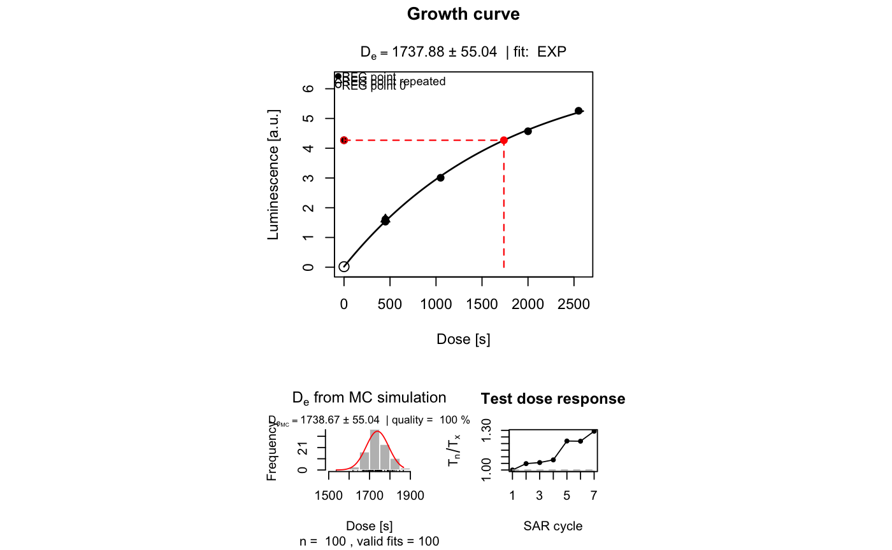
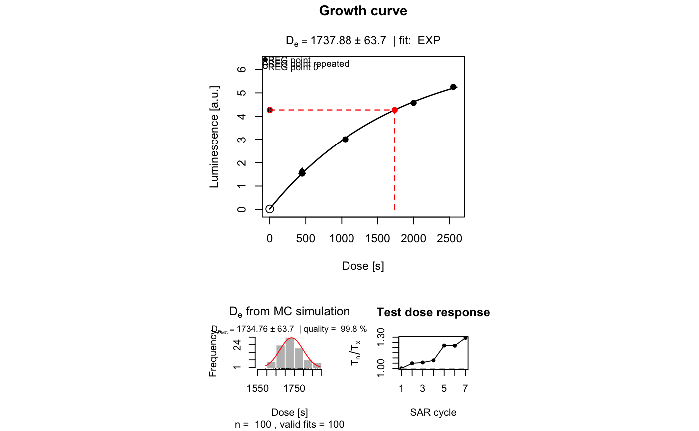
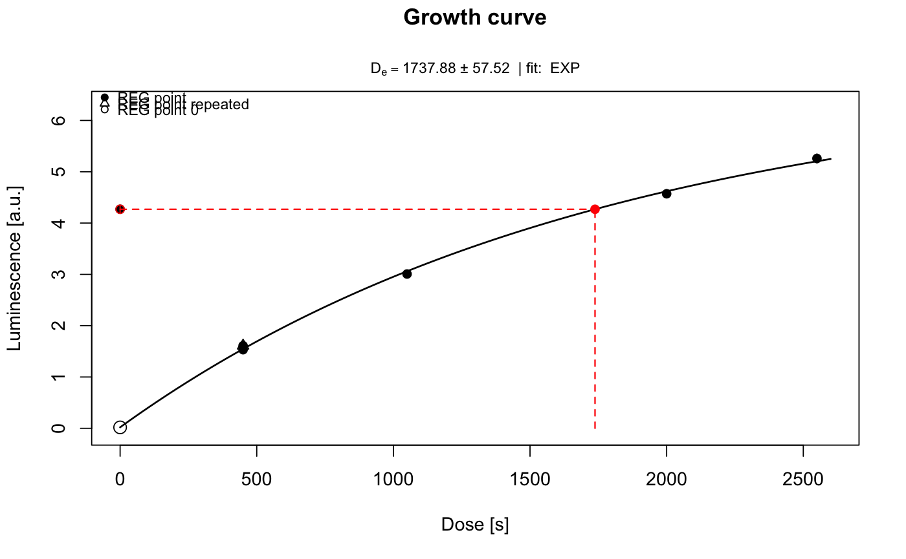
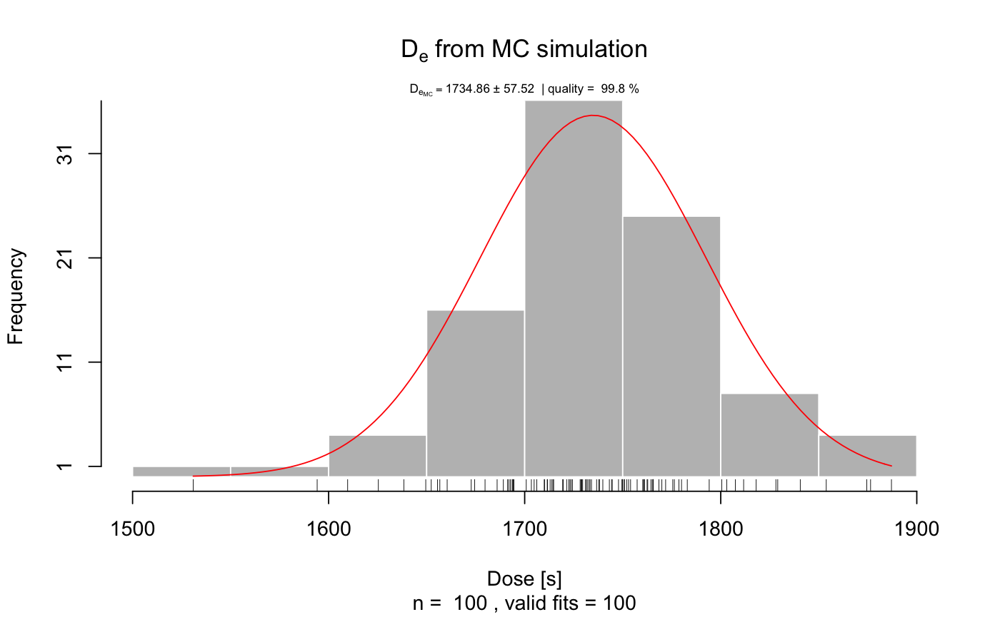
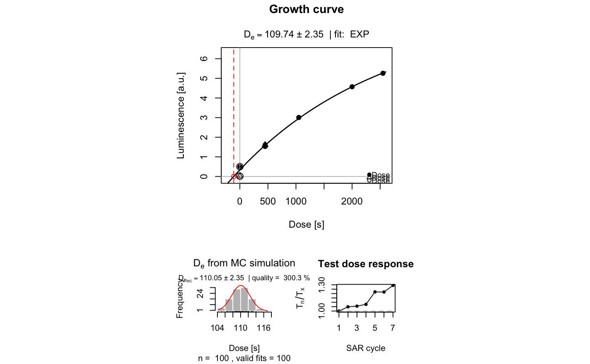
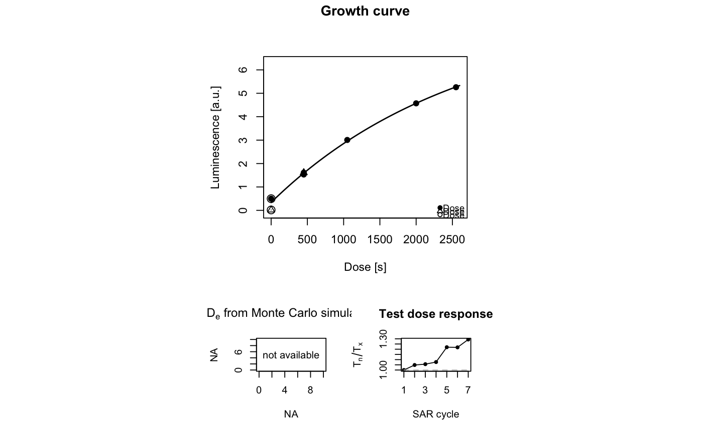
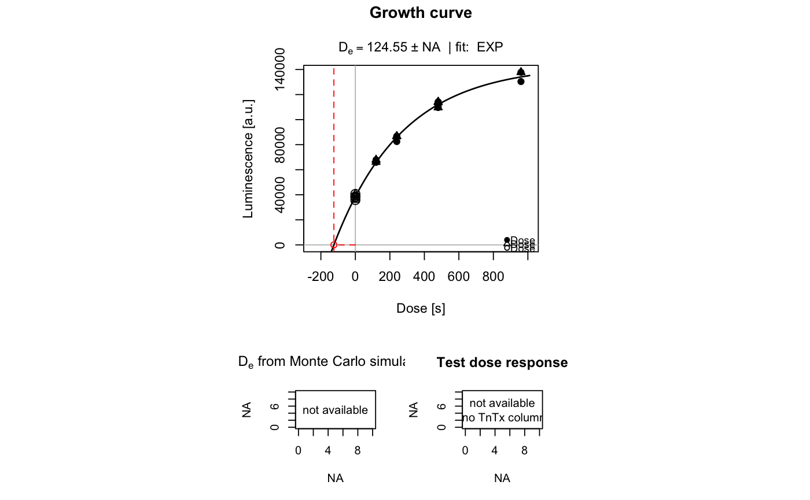

Fit and plot a growth curve for luminescence data (Lx/Tx against dose)
A dose response curve is produced for luminescence measurements using a regenerative or additive protocol. The function supports interpolation and extraxpolation to calculate the equivalent dose.
plot_GrowthCurve(sample, na.rm = TRUE, mode = "interpolation", fit.method = "EXP", fit.force_through_origin = FALSE, fit.weights = TRUE, fit.includingRepeatedRegPoints = TRUE, fit.NumberRegPoints = NULL, fit.NumberRegPointsReal = NULL, fit.bounds = TRUE, NumberIterations.MC = 100, output.plot = TRUE, output.plotExtended = TRUE, output.plotExtended.single = FALSE, cex.global = 1, txtProgressBar = TRUE, verbose = TRUE, ...)
Arguments
| sample | data.frame (required): data frame with three columns for x=Dose,y=LxTx,z=LxTx.Error, y1=TnTx. The column for the test dose response is optional, but requires 'TnTx' as column name if used. For exponential fits at least three dose points (including the natural) should be provided. |
|---|---|
| na.rm | logical (with default):
excludes |
| mode | character (with default): selects calculation mode of the function.
Please note that for option |
| fit.method | character (with default): function used for fitting. Possible options are:
See details. |
| fit.force_through_origin | logical (with default)
allow to force the fitted function through the origin.
For |
| fit.weights | logical (with default): option whether the fitting is done with or without weights. See details. |
| fit.includingRepeatedRegPoints | logical (with default):
includes repeated points for fitting ( |
| fit.NumberRegPoints | integer (optional): set number of regeneration points manually. By default the number of all (!) regeneration points is used automatically. |
| fit.NumberRegPointsReal | integer (optional): if the number of regeneration points is provided manually, the value of the real, regeneration points = all points (repeated points) including reg 0, has to be inserted. |
| fit.bounds | logical (with default):
set lower fit bounds for all fitting parameters to 0. Limited for the use
with the fit methods |
| NumberIterations.MC | integer (with default): number of Monte Carlo simulations for error estimation. See details. |
| output.plot | logical (with default):
plot output ( |
| output.plotExtended | logical (with default):
If'
If |
| output.plotExtended.single | logical (with default):
single plot output ( |
| cex.global | numeric (with default): global scaling factor. |
| txtProgressBar | logical (with default):
enables or disables txtProgressBar. If |
| verbose | logical (with default): enables or disables terminal feedback. |
| ... | Further arguments and graphical parameters to be passed. Note:
Standard arguments will only be passed to the growth curve plot. Supported:
|
Value
Along with a plot (so far wanted) an RLum.Results object is returned containing,
the slot data contains the following elements:
| DATA.OBJECT | TYPE | DESCRIPTION |
..$De : |
data.frame |
Table with De values |
..$De.MC : |
numeric |
Table with De values from MC runs |
..$Fit : |
nls or lm | object from the fitting for EXP, EXP+LIN and EXP+EXP.
In case of a resulting linear fit when using LIN, QDR or EXP OR LIN |
..$Formula : |
expression | Fitting formula as R expression |
..$call : |
call |
The original function call |
Details
Fitting methods
For all options (except for the LIN, QDR and the EXP OR LIN),
the minpack.lm::nlsLM function with the LM (Levenberg-Marquardt algorithm)
algorithm is used. Note: For historical reasons for the Monte Carlo
simulations partly the function nls using the port algorithm.
The solution is found by transforming the function or using uniroot.
LIN: fits a linear function to the data using
lm: $$y = m*x+n$$
QDR: fits a linear function to the data using
lm: $$y = a + b * x + c * x^2$$
EXP: try to fit a function of the form
$$y = a*(1-exp(-(x+c)/b))$$
Parameters b and c are approximated by a linear fit using lm. Note: b = D0
EXP OR LIN: works for some cases where an EXP fit fails.
If the EXP fit fails, a LIN fit is done instead.
EXP+LIN: tries to fit an exponential plus linear function of the
form:
$$y = a*(1-exp(-(x+c)/b)+(g*x))$$
The De is calculated by iteration.
Note: In the context of luminescence dating, this
function has no physical meaning. Therefore, no D0 value is returned.
EXP+EXP: tries to fit a double exponential function of the form
$$y = (a1*(1-exp(-(x)/b1)))+(a2*(1-exp(-(x)/b2)))$$
This fitting procedure is not robust against wrong start parameters and
should be further improved.
Fit weighting
If the option fit.weights = TRUE is chosen, weights are calculated using
provided signal errors (Lx/Tx error):
$$fit.weights = 1/error/(sum(1/error))$$
Error estimation using Monte Carlo simulation
Error estimation is done using a Monte Carlo (MC) simulation approach. A set of Lx/Tx values is
constructed by randomly drawing curve data from samled from normal
distributions. The normal distribution is defined by the input values (mean
= value, sd = value.error). Then, a growth curve fit is attempted for each
dataset resulting in a new distribution of single De values. The sd
of this distribution is becomes then the error of the De. With increasing
iterations, the error value becomes more stable.
Note: It may take some calculation time with increasing MC runs,
especially for the composed functions (EXP+LIN and EXP+EXP).
Each error estimation is done with the function of the chosen fitting method.
Subtitle information
To avoid plotting the subtitle information, provide an empty user mtext
mtext = "". To plot any other subtitle text, use mtext.
Function version
1.9.10 (2018-01-17 18:21:45)
How to cite
Kreutzer, S., Dietze, M. (2018). plot_GrowthCurve(): Fit and plot a growth curve for luminescence data (Lx/Tx against dose). Function version 1.9.10. In: Kreutzer, S., Burow, C., Dietze, M., Fuchs, M.C., Schmidt, C., Fischer, M., Friedrich, J. (2018). Luminescence: Comprehensive Luminescence Dating Data Analysis. R package version 0.8.0. https://CRAN.R-project.org/package=Luminescence
References
Berger, G.W., Huntley, D.J., 1989. Test data for exponential fits. Ancient TL 7, 43-46.
See also
nls, RLum.Results, get_RLum, minpack.lm::nlsLM, lm, uniroot
Examples
##(1) plot growth curve for a dummy data.set and show De value data(ExampleData.LxTxData, envir = environment()) temp <- plot_GrowthCurve(LxTxData)#> [plot_GrowthCurve()] Fit: EXP (interpolation) | De = 1737.88 | D01 = 1766.07get_RLum(temp)#> De De.Error D01 D01.ERROR D02 D02.ERROR De.MC Fit #> 1 1737.88 55.04 1766.07 85.75951 NA NA 1738.67 EXP#> Nonlinear regression model #> model: y ~ a * (1 - exp(-(x + c)/b)) #> data: data #> a b c #> 6.806 1766.074 5.051 #> weighted residual sum-of-squares: 0.0004268 #> #> Number of iterations to convergence: 4 #> Achieved convergence tolerance: 1.49e-08##(2) plot the growth curve only - uncomment to use ##pdf(file = "~/Desktop/Growth_Curve_Dummy.pdf", paper = "special") plot_GrowthCurve(LxTxData)#> [plot_GrowthCurve()] Fit: EXP (interpolation) | De = 1737.88 | D01 = 1766.07##dev.off() ##(3) plot growth curve with pdf output - uncomment to use, single output ##pdf(file = "~/Desktop/Growth_Curve_Dummy.pdf", paper = "special") plot_GrowthCurve(LxTxData, output.plotExtended.single = TRUE)#> [plot_GrowthCurve()] Fit: EXP (interpolation) | De = 1737.88 | D01 = 1766.07##dev.off() ##(4) plot resulting function for given intervall x x <- seq(1,10000, by = 100) plot( x = x, y = eval(temp$Formula), type = "l" )##(5) plot using the 'extrapolation' mode LxTxData[1,2:3] <- c(0.5, 0.001) print(plot_GrowthCurve(LxTxData,mode = "extrapolation"))#> [plot_GrowthCurve()] Fit: EXP (extrapolation) | De = 109.74 | D01 = 2624.06#> #> [RLum.Results-class] #> originator: plot_GrowthCurve() #> data: 4 #> .. $De : data.frame #> .. $De.MC : numeric #> .. $Fit : nls #> .. $Formula : expression #> additional info elements: 1##(6) plot using the 'alternate' mode LxTxData[1,2:3] <- c(0.5, 0.001) print(plot_GrowthCurve(LxTxData,mode = "alternate"))#> #> [RLum.Results-class] #> originator: plot_GrowthCurve() #> data: 4 #> .. $De : data.frame #> .. $De.MC : logical #> .. $Fit : nls #> .. $Formula : expression #> additional info elements: 1##(7) import and fit test data set by Berger & Huntley 1989 QNL84_2_unbleached <- read.table(system.file("extdata/QNL84_2_unbleached.txt", package = "Luminescence")) results <- plot_GrowthCurve( QNL84_2_unbleached, mode = "extrapolation", plot = FALSE, verbose = FALSE)#> Warning: [plot_GrowthCurve()] 'fit.weights' set to NA since the error column is invalid or 0.#calculate confidence interval for the parameters #as alternative error estimation confint(results$Fit, level = 0.68)#>#> 16% 84% #> a 140543.3024 146731.8471 #> b 374.0861 425.5679 #> c 116.3499 133.3474# NOT RUN { QNL84_2_bleached <- read.table(system.file("extdata/QNL84_2_bleached.txt", package = "Luminescence")) STRB87_1_unbleached <- read.table(system.file("extdata/STRB87_1_unbleached.txt", package = "Luminescence")) STRB87_1_bleached <- read.table(system.file("extdata/STRB87_1_bleached.txt", package = "Luminescence")) print( plot_GrowthCurve( QNL84_2_bleached, mode = "alternate", plot = FALSE, verbose = FALSE)$Fit) print( plot_GrowthCurve( STRB87_1_unbleached, mode = "alternate", plot = FALSE, verbose = FALSE)$Fit) print( plot_GrowthCurve( STRB87_1_bleached, mode = "alternate", plot = FALSE, verbose = FALSE)$Fit) # }